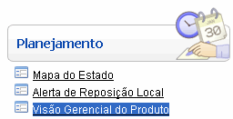
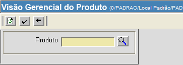
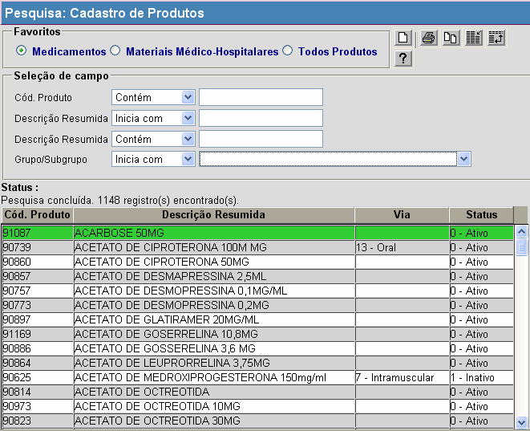
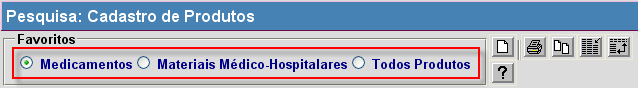
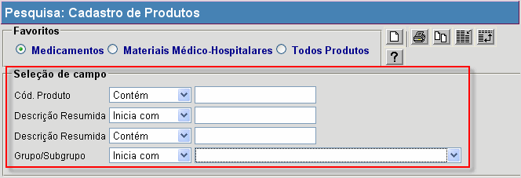
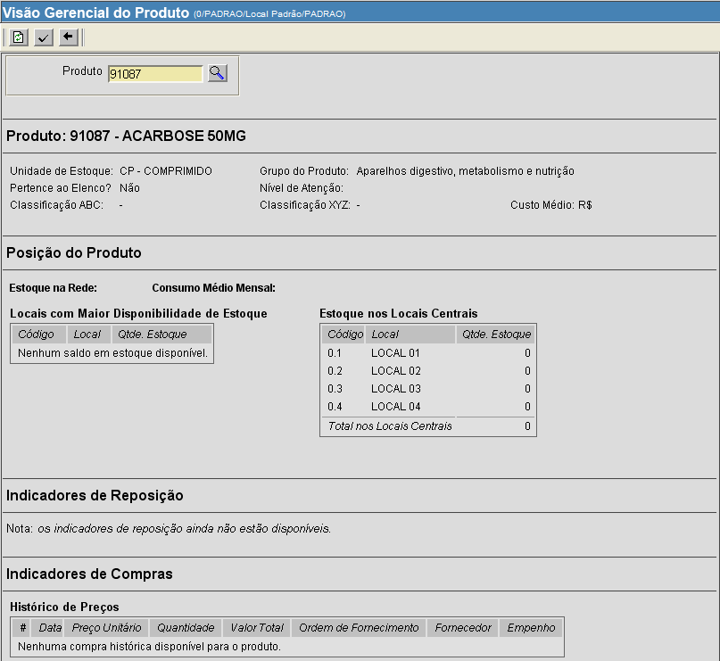

Visão Gerencial do Produto [ Voltar ]Utilize esta tela para consultar informações de estoque de qualquer item cadastrado. O formulário "Visão Gerencial do Produto" encontra-se dentro do menu "Planejamento".

Ao clicar no formulário, o sistema exibirá a seguinte tela: 
1º
Passo: insira um código de produto no campo. Informe
o código do produto desejado. Se necessário, clique no botão Ao clicar no botão de pesquisa, o sistema exibirá a seguinte tela: 
2º Passo: selecione o produto. Procure na lista disponível o nome do produto desejado. O sistema permite selecionar o tipo de pesquisa, na seção "Favoritos" (na parte superior da janela): 
As opções de pesquisa são:
Se desejar, utilize os filtros (abaixo dos favoritos)
para refinar ainda mais os resultatos exibidos: 
Os filtros disponíveis para esta pesquisa são:
Ao clicar no produto desejado, a janela de pesquisa será fechada automáticamente e o sistema preencherá automáticamente o campo disponível com o código de tal produto. 3º Passo: clique no botão 
Obs: Se for necessário acessar as informações de outro produto, clique no botão para limpar o formulário e começar uma nova pesquisa.
|
 [Procurar]
para selecionar o produto a partir de uma lista contendo os produtos
cadastrados.
[Procurar]
para selecionar o produto a partir de uma lista contendo os produtos
cadastrados.